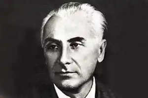
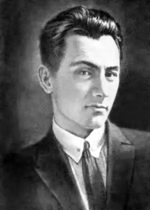
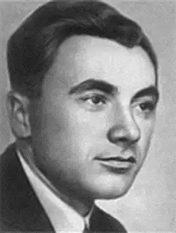
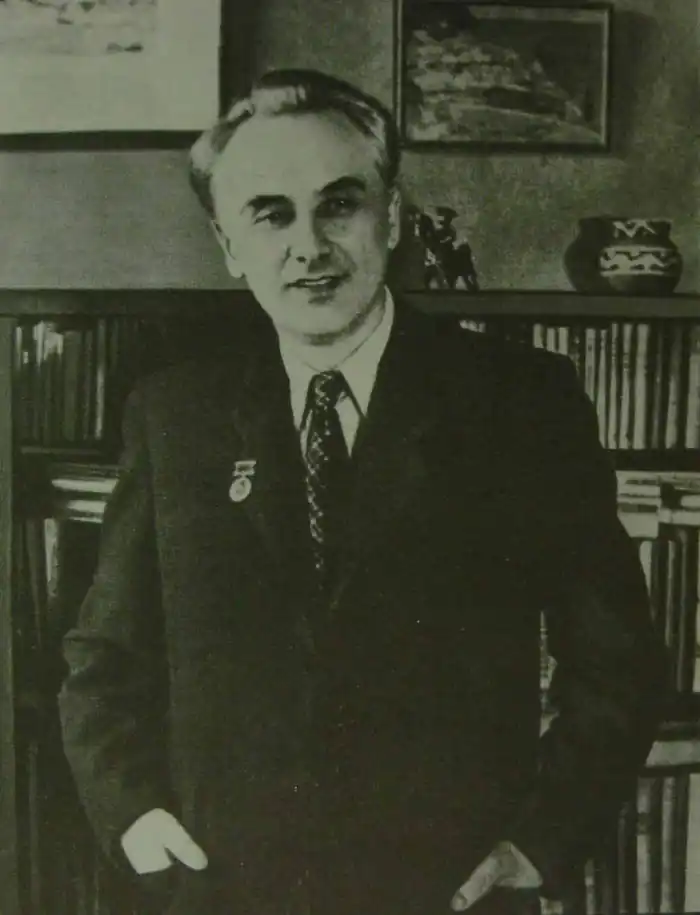
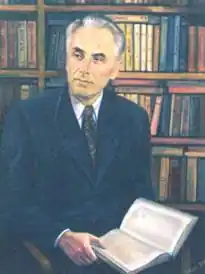
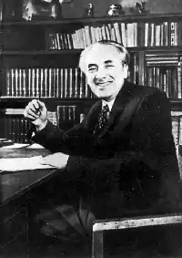
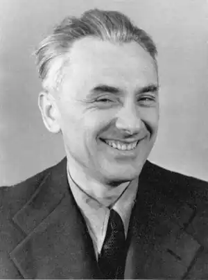

ЮРІЙ ЯНОВСЬКИЙ
(1902 — 1954)
Юрій Іванович Яновський народився 27 серпня 1902р. в с. Нечаївці (Компаніївський район Кіровоградської області), де колись був хутір пана Майєра. У квітні 1945р. Ю. Яновський з уст матері записав деякі подробиці про свій родовід та місце народження, а опубліковані вони повністю 1983р. Сім’я мала дев'ятеро дітей; злидні й нестатки змушували її кілька разів змінювати місце свого мешкання, з 1917р. жили в Єлисаветграді, де батько працював на заводі сільськогосподарських машин. Далі — середня освіта (народне училище, земське реальне училище); служба в 1919 — 1921 pp. у різних установах; не завершене навчання в Київському політехнічному інституті (1922 — 1925), де він бере участь у літературній студії інституту, входить у театральні кола столиці, допомагає акторам і режисерам театру-студії імені Г. Михайличенка у створенні ряду вистав, виявляючи неабиякі знання фольклору, і пише в співавторстві з С. Греєм гротескну п'єсу "Камергер"; співробітництво з групою київських панфутуристів. Тоді були опубліковані вірші "Море" (російською мовою під псевдонімом "Ней") та "Дзвін" (українською за власним прізвищем), здійснені газетні публікації в "Більшовику" (дванадцять нарисів і дві рецензії, підписані псевдонімом "Юр. Юрченко"). Хоча основних літературних успіхів Ю. Яновський досягне в прозі та драматургії, але писання віршів не облишатиме протягом усього життя. Кращі з них увійшли до збірки "Прекрасна УТ" (1928), що була через чотири роки перевидана з деякими доповненнями. Кілька пізніших поезій датуються сороковими і п'ятдесятими роками, але в друк не видавалися. Вони стали відомими лише після смерті письменника, коли вийшло перше п'ятитомне зібрання його творів (1958 — 1959). Перший прозовий твір — новела "А потім німці тікали" — опублікуваний у газеті "Більшовик" 2 березня 1924р. 1925р. виходить збірка "Мамутові бивні", до якої включені новели, створені на матеріалі конкретних подій громадянської війни. 1927р. — книжка "Кров землі", доповнена новими оповіданнями — "В листопаді", "Байгород", "Рейд". У час їх створення Ю. Яновський працював на Одеській кіностудії, освоюючи там секрети нової для нього кіно-справи (про майстрів кіно опублікував 1930р. книжку нарисів "Голлівуд на березі Чорного моря"). Пише два нариси про режисера О. Довженка ("Історія майстра" і відгук-есе про фільм "Звенигора" (1927р.)), оповідання "В листопаді", що присвячене О. Довженкові. В Одесі створив кілька кіносценаріїв — "Гамбург", "Фата моргана" й ін. Належав у різний час до "Комункульту", "Жовтня", ВАПЛІТЕ, "Пролітфронту", але ця приналежність була здебільшого формальною. Підсумок літературної молодості — два романи — "Майстер корабля" (1928) та "Чотири шаблі" (1930), (у 1930р. кілька розділів "Чотирьох шабель" опублікував журнал "Красная новь"). Задум "Майстра корабля" (являє собою мемуарну розповідь То-Ма-Кі (Товариша Майстра Кіно) народився ще в часи роботи на Одеській кінофабриці, а реалізація цього задуму відбувалася після приїзду в 1927р. до Харкова. 1932p. — вийшла окремим виданням п'єса "Завойовники". 1935р. — опублікування "Вершників". За змістом, життєвим матеріалом й за художньою вагою "Вершники" — один із кращих творів радянської літератури про героїку громадянської війни. Зростання таланту Яновського-драматурга позначене створенням романтичної трагедії "Дума про Британку" (1937). Перші вистави "Думи про Британку" в 1937p. театральна критика не сприйняла. Пізніше п'єса була перероблена, і останній варіант її викликатиме вже менше критичних нарікань. За її мотивами створено М. Вінграновським фільм, а В. Губаренком оперу. 1939p. — опублікована п'єса з сільського життя "Потомки". У другій половині 30-х років визріває задум нового епічного твору "Капітани", але звершити задумане не вдалося. 1940р. виходить книжка оповідань "Короткі історії". Це гостросюжетні оповідання ("Шпигун"), різновид дорожного нарису ("Дорога на Запоріжжя"), романтичні новели ("Чапай", "Романтик", "Червонарм"), стилізовані оповіді монологічного типу "Василь Палійчук, гуцул", "Іван", "На зеленій Буковині". Кілька творів ("Наталка", "Ганна Антонівна") можуть бути умовно названі новелами-портретами. 1944р. — збірка новел "Земля батьків". В формі новели-монологу витримані оповідання "Коваль", "Генерал Макодзьоба", "Дід Данило з "Соціалізму", "Дівчинка у вінку" й ін.; в формі класичного оповідання — "Яструбок", "Комісар", "Україна". Кілька років (воєнних і повоєнних) Ю. Яновський працював редактором журналу "Українська література" (з 1946p. "Вітчизна"), багато їздив по країні, на Нюрнберзькому процесі був одним із кореспондентів радянської преси, що дало змогу написати цикл хвилюючих репортажів "Листи з Нюрнберга" (1946). 1945 — 1946 pp. — робота над романом "Жива вода" (1947), який у пізнішій редакції (після смерті письменника) публікувався вже під назвою "Мир" (1956). Журнальна публікація роману "Мир" — "Жива вода" (Дніпро. — 1947. — № 4-5) сприйнята була спочатку схвально, але через якийсь час зазнала глибоко несправедливої критики, організованої Л. Кагановичем. 1948р. — нова книжка "Київські оповідання", відзначена 1948р. Державною премією СРСР (оповідання "Через фронт", "Київська соната", "Боротьба за людину", "Путь у Францію", "Династичне питання", "Під яблунею" й ін.). 1954р. видана "Нова книга" ("На ярмарку", "Мистецтво", "Святий вечір"). Віддавши кращі творчі роки прозі, останнє слово в літературі письменник сказав мовою драматургічного мистецтва. Йдеться про п'єсу "Дочка прокурора", яка побачила світло рампи за кілька днів до смерті Юрія Івановича Яновського. Працюючи над драмою (задум п'єси відноситься ще до передвоєнних років, коли письменник почав роботу над незавершеною п'єсою "День гніву", 1940), він водночас публікує комедію "Райський табір" (1953) (сатиричний памфлет на імперіалістичний світ періоду інтервенції США в Кореї), починає працювати над тетралогією "Молода воля", яка присвячувалася 300-річчю возз'єднання України з Росією (романтична драма про молоді роки Тараса Шевченка). Як сценарист Ю. Яновський також створює сценарій художнього фільму "Зв'язковий підпілля" (1951), літературний сценарій "Павло Корчагін" (за мотивами роману М. Островського "Як гартувалася сталь", 1953) та сценарій документального фільму "Микола Васильович Гоголь" (1952). Не стало Ю. Яновського 25 лютого 1954р. Спадщина письменника здобула широке визнання читачів. Двічі виходили його твори п'ятитомними виданнями. Кращі з них перекладені багатьма мовами, опубліковані в Болгарії, НДР, Польщі, Угорщині, Чехословаччині, Австрії, Італії, Франції.